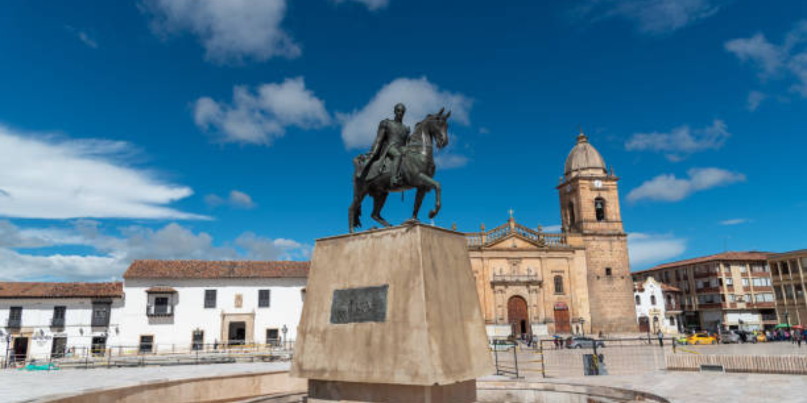

Boyaca

Conoce sobre Boyaca
"Boyacá es un rincón mágico de Colombia, donde la historia, la naturaleza y la cultura se encuentran en cada rincón.
Con sus hermosos paisajes montañosos, coloridas aldeas coloniales y una tradición agrícola que le da sabor a cada plato,
Boyacá es un destino que invita a explorar. Desde el majestuoso Parque Natural de Iguaque hasta los
encantadores pueblos como Villa de Leyva, cada lugar en Boyacá es un viaje en sí mismo.
Además, su rica historia, marcada por eventos clave en la independencia de Colombia, le otorga un carácter único que te hará
sentir la esencia del país en cada paso. Un lugar para los amantes de la naturaleza, los viajeros curiosos y los
apasionados de la historia.
Lugares Imperdibles para Explorar en Boyacá
Villa de Leyva:
Uno de los pueblos más bellos y mejor conservados de Colombia, famoso por su plaza mayor empedrada,
su arquitectura colonial y sus museos. Es un lugar ideal para el turismo histórico y cultural.
Parque Natural de Iguaque
Un espacio protegido de belleza natural única, ideal para el ecoturismo.
En este parque se encuentran rutas de senderismo y la famosa Laguna de Iguaque, considerada un lugar sagrado por los indígenas.
Puente de Boyacá
Sitio histórico de gran importancia, ya que fue el escenario de la Batalla de Boyacá en 1819,
clave para la independencia de Colombia. En el lugar se pueden encontrar monumentos y estatuas conmemorativas.
Laguna de Tota
La laguna más grande de Colombia, rodeada por montañas y paisajes impresionantes.
Es un excelente lugar para actividades acuáticas y disfrutar de la tranquilidad de la naturaleza.
Descubre la Deliciosa Gastronomía de Boyacá
Ajiaco Boyacense
Sopa espesa hecha con papas, pollo y mazamorra, acompañada de almojábanas o arepas.
Es un plato reconfortante y muy popular en la región..
Sopa de Cuy
Sopa tradicional preparada con cuy (roedor de los Andes),
cocido en caldo con hierbas, papas y verduras. Es una delicia autóctona de los pueblos boyacenses.
Cuchuco de Trigo
Guiso espeso hecho con trigo, carne de cerdo, guisantes y papas.
Es un plato calórico y nutritivo, típico de las zonas rurales de Boyacá.
Informacion economica y ocupacional
Economía
Boyacá se destaca por su agricultura, especialmente en cultivos como maíz, papas, trigo y flores.
También tiene una importante producción ganadera, especialmente de carne y leche.
El turismo, impulsado por su riqueza natural y cultural, está creciendo, con destinos como Villa de Leyva y el Parque Iguaque.
La industria artesanal (como cerámica y sombreros) también es relevante.Ocupación
La mayoría de la población trabaja en el sector agropecuario, pero también hay empleo en el turismo,
la comercialización de productos agrícolas y la artesanía. El sector industrial es limitado,
pero la textilería y la producción artesanal están en expansión
Regresar